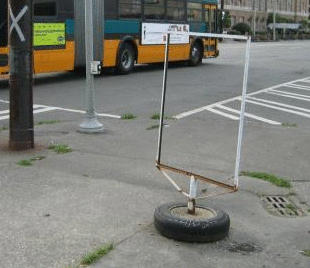
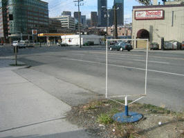
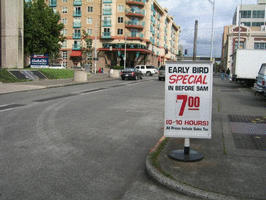

| This is a hyperdimensional gateway. |  |
|---|---|
|  | Here's another. |
Hyperdimensional Gateways are doorways into adjacent universes. Although our universe is very large in the three dimensions we see, it is actually very thin in the fourth spatial dimension. Some estimates put this thickness at only 10-33 cm!
| This hyperdimensional gateway is out of order. Perhaps it isn't connected to another universe right now. |  |
|---|
Every time someone makes a choice a new universe is created, one for each possible outcome. The extra universe is stuck in right next to the one the decision is made in. Billions of times per second a new universe is created that's almost like the one you're in.In fact, when you choose to step through a hyperdimensional gateway, a new universe is created: there has to be a universe for the You that didn't choose to step through and one for the You who did. That's why you'll never meet yourself in the other universe. (And that's why you can never come back the way you came...)
Q: Why do I see the same person both through and around the gateway?
A: Universe creation is complicated. While the new universe is coming into being, you are being split, too. For just a moment you'll see two universes at once. Once the person has finished going through, then the split is complete and the illusion will pass.